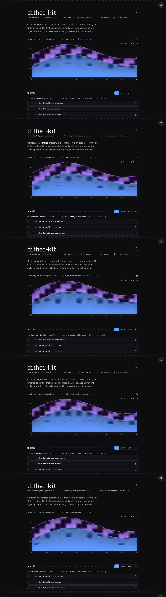
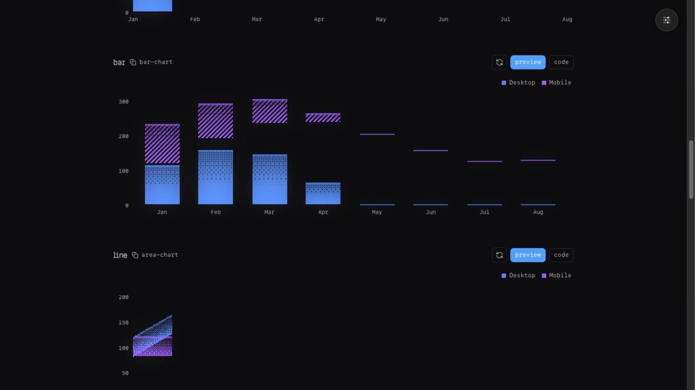
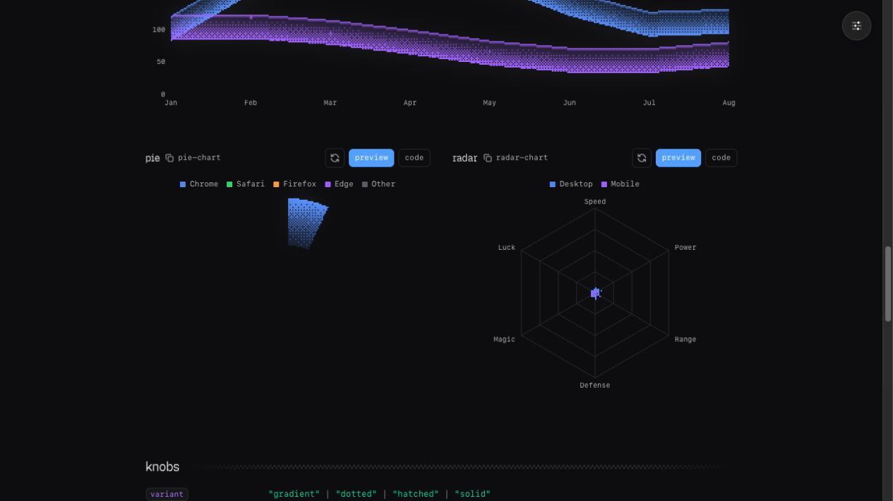
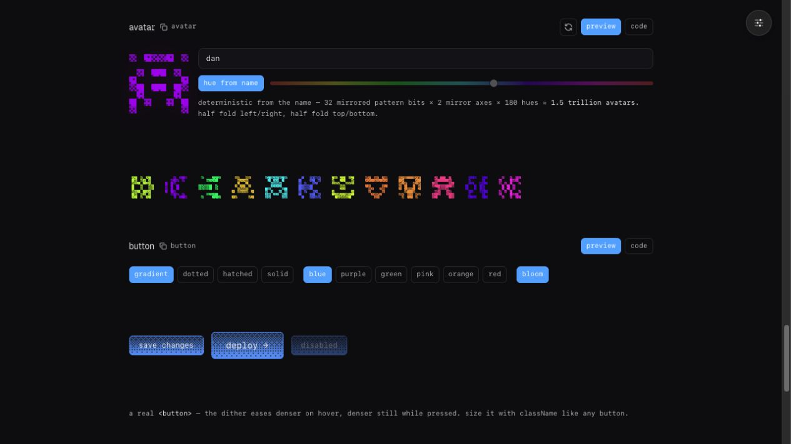
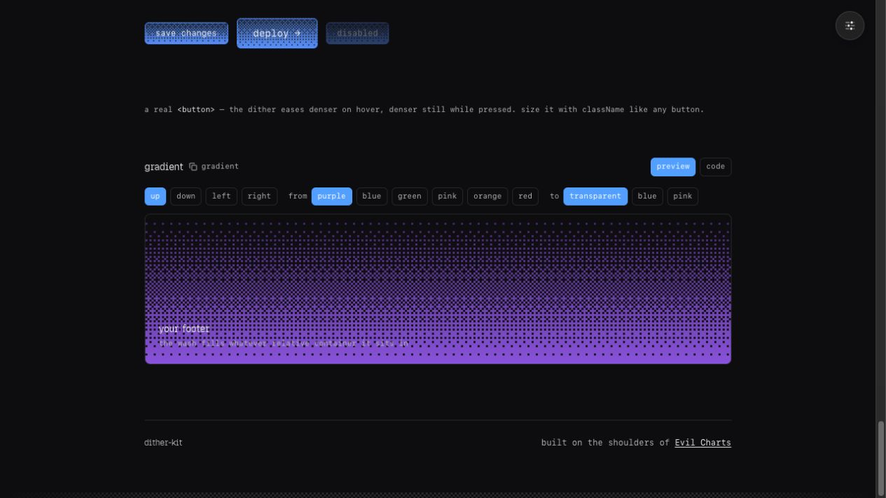

Original captures are from tripwire.sh/dither-kit. Terminal captures are rendered by the current Go implementation. The comparison is intentionally honest: the terminal preserves geometry, palette, dither order, and interaction concepts, but cannot reproduce browser pixels or CSS effects exactly.

termkit-go / area
125 ┊ ▄▄▄▄▄▄▄▄▄▄▄▄
109 ┊ ▄▄▄▄▄▄▄ ▒▒ ▒▒ ▒▒
94 ┊▄▄▄▄▄▄▒ ▒▒ ▒▒ ▒▒ ▒▓
78 ▄▄▄▄┊▒▒ ▒▒ ▓▓ ▓▓ ▓▓ ▓▓▄▄▄
62 ▄▄▄▄▄▄▒▒ ┊▒ ▓▓▄▄▄▄▄▄▄▄▄▄▓▓▄▄▄▄▄···
47 ▄▄▄▄▄▄ ▒▄▄▄▒▓ ▓┊ ▄▄▄··········▄▄········
31 ▄▄▄▄▄▄···▄▄▄▄▄┊▄▄·······················
16 ▄▄··············┊·························
0 ──────────────────────────────────────────
Mon Tue Wed Thu Fri Sa
■ desktop ■ mobile
◆ Wed desktop: 29.00 mobile: 56.00Difference: the browser uses a high-resolution canvas with continuous curves, glow, animation, and pointer tooltip; the terminal uses discrete cells and a static selected column.

termkit-go / bar 125 ┊ ▀▀▀ ▀▀ 109 ┊ ▀▀▀ ▒ ▒ 94 ┊ ▒ ▒ 78 ▀┊▀ ▓▓ ▓▓ ▀▀ 62 ▀▀▀ ┊▒ ▀▀▀ ▓▓ ·· 47 ▀▀ ▀▀▀ ▓┊ ··· ▀▀▀ ·· 31 ··· ▀┊▀ ··· ··· ·· 16 ▀▀ ··· ·┊· ··· ··· ·· 0 ────────────────────────────────────────── ■ desktop ■ mobile termkit-go / line 76 ┊ ╌ •• 66 ┊ ••••• ╌╌ ╌╌╌••• 57 ┊╌╌ •• ╌╌╌••••• ╌╌╌ 48 ╌╌┊ ╌╌╌╌ ╌╌ ╌╌ 38 ••••••╌╌ ┊ •• ╌╌╌ 28 ╌╌•••• ╌╌ ••┊• 19 ••╌╌╌╌╌╌╌╌ ┊ 0 ──────────────────────────────────────────
Difference: bar geometry and line connectivity are represented, but browser antialiasing, canvas bloom, dashed stroke spacing, and responsive dimensions are not identical.

termkit-go / pie
··········▓▓▓▓▓▓▓▓▓▓········
················▓▓▓▓▓▓▓···············
····················▓▓▓···················
··········································
······································
● Mon 6% ● Tue 15% ◆ Wed 10% ● Thu 24%
termkit-go / radar
··········
·········· · ··········
●••••••••• ············· ······
· ••···•●••••••••••••••••••••••●··· ·
· •••▒▒▒▒▒▒▒▒▒▒▒▒▒▒▒▒▒••●•••••• · ·
· ••▒▒▒▒▒▒▒▒▒▒▒▒▒▒▒▒▒▒▒▒▒▒▒•••••••● ·
·········· •••●•• ··········Difference: the terminal uses Unicode geometry and an elliptical pie; the browser uses per-pixel polar masks, smooth labels, hover expansion, and a true donut inner radius.

▓▓ ▓▓▓▓▓▓ ▓
▓▓ ▓▓▓▓▓▓ ▓
▓ ▓▓▓ ▓▓
▓ ▓▓▓ ▓▓
▓▓ ▓
▓▓▓ ▓▓▓ ▓▓▓
▓▓▓ ▓▓▓ ▓▓▓
▓ ▓▓
▓▓ ▓▓ ▓ ▓
▓▓ ▓▓ ▓ ▓
░░ ░
[████ save changes ████]
[▒▒▒ deploy → ▒▒▒]
[███ disabled ███]Difference: the seeded avatar pattern and button states are present, but a terminal cannot provide the browser’s 4×4 CSS/canvas pixel scale, native button focus ring, pointer transitions, or blur bloom.

░ ░ ░ ░ ░ ░ ░ ░ ░
░ ░ ░ ░ ░ ░ ░ ░ ░ ░ ░
░ ░ ░ ░ ░ ░ ░ ░ ░ ░ ░ ░ ░ ░ ░ ░
▒▒▒▒▒▒▒▒▒▒▒▒▒▒▒▒▒▒▒▒▒▒▒▒▒▒▒▒▒▒▒▒
╱•✦••••••••✦••▒░█▓▒░
╱•••••••✦••• ╱••••█▓▒░█▓▒░█▓▒░█▓▒░█▓▒
•✦••••█▓▒░█▓▒░█▓▒░╲•▒░█▓▒░█▓▒░█▓▒░█▓▒░█▓▒░█▓Difference: direction and ordered fade are preserved, but terminal cells cannot provide the reference’s alpha compositing, per-pixel opacity, CSS container fill, or bloom filter.